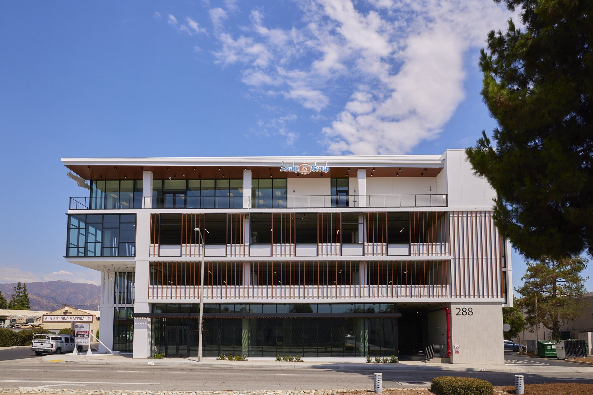
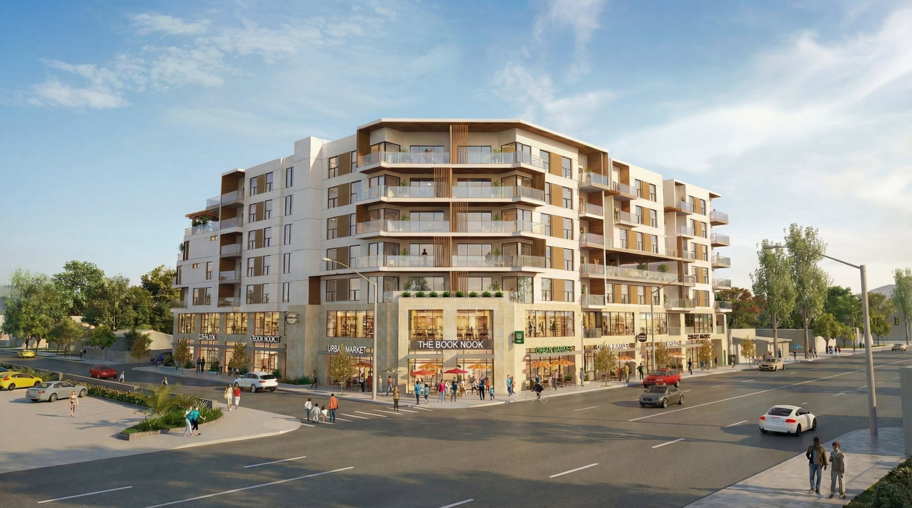
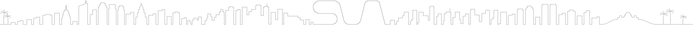

Housing
Multifamily · Mixed-use · Single-family residences · Small lot subdivisions · Townhomes · ADUs and pre-approved plans
Services
We take projects from the first feasibility study through permits and construction, across six building types.
Multifamily · Mixed-use · Single-family residences · Small lot subdivisions · Townhomes · ADUs and pre-approved plans
Shopping centers · Street retail · Entertainment · Office buildings · Coworking · Office renovations
Hotels · Hotel renovations · Restaurants
Industrial buildings · Showrooms
Medical office buildings · Medical centers
Educational · Religious
Find out what you can build, then get it approved.
Drawings, permits and support through construction.
Visuals that win approvals, tenants and buyers.
For owners and property managers
Tenant design review
Design and signage criteria manuals
Restaurant patio and blade sign criteria
Center graphics and banner programs
Sign programs
Vanilla shell design and documentation
Space cuts and reconfiguration
Lease outline documents
Specialty retail coordination
Temporary tenant design and coordination
Upgrades that keep a center competitive
Storefront design and implementation
Building upgrades and in-fills
Cart and kiosk design
Wall shop design and implementation
Lighting enhancements
Color and finish upgrades
For retailers, offices and medical tenants
Tenant improvement design and permitting
Coordination with landlord and center criteria
Storefront and signage to center standards
Toilet room upgrades
ADA upgrades
About
We don’t start from a set aesthetic; we start from research and collaboration, and work toward solutions that are both pragmatic and elegant. Our clients are our partners: together we shape the program, the design direction and the plan for growth.




scale(s) lab architects © 2026
Project